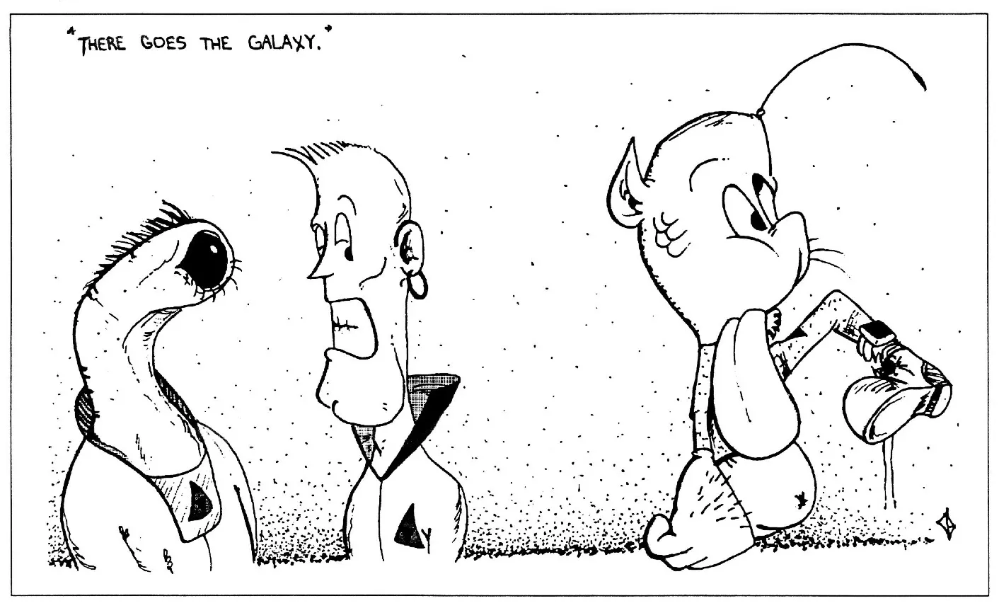
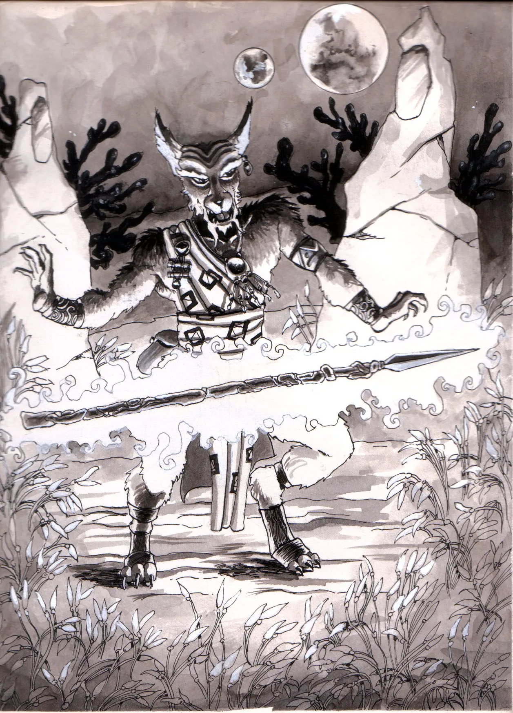

To portray a role in a play or a movie you must have a character to portray, the same is true in Genesis. In the game there are many ways to describe a character including race, physical and mental attributes, damage, occupation, education and skills, sex, age, handedness, etc. All of this information is essential to describe a character in enough detail for you to portray that character.
There are two types of characters in Genesis, and the steps in this chapter are designed to produce both types of characters:Player characters - PC's To give players the detailed information they need, they would use the second set of rules to create their characters. The rules for PC's and detailed NPC's are labeled (II).
Non-Player Characters - NPC's The first set of rules produces a 'static' character with only basic information will be generated. The rules for NPC's and quick PC's are labeled (I)
Now we can begin the process to produce a character. At first it may seem a little difficult, but, by reading both the description of how to perform each step and the example section the procedures should become clearer. To help we have also provided an Example in the next section.
Choosing a Race
Of all of the different ways that you can describe your character the most important is his or her race. There are several of sentient races known in the year 2239. Depending on which race you choose to portray, your character's attributes and skills will be affected accordingly, so it is advised that you read each race description carefully before making deciding. Your choice should be based upon your ability to assume the role of the race both physically and mentally. For instance, as a desert-dwelling Eebek you would not even think to turn around if you heard a noise behind you - you would simply flip your stalk. Or else the peaceful Vjesperé, whose great respect for life prevents you from consciously killing an opponent without great mental turmoil. Would you as a Human be able to fill the role of the race that you choose?
Procedure - Choosing a Race
-
Roll 1:100sd and consult Table #1-1 to choose a race.
The table reflects the general distribution of the
races across the First and Second spheres.
or
-
Simply pick the race for your character
Generating Attributes
Each role playing-game uses it own set of attributes and in every game they are defined differently. In Genesis attributes describe how well a character can perform basic mental or physical tasks, and are based on the physiology and structure of the race. In Genesis there are two kinds of attributes, primary and secondary. Primary attributes are quite specific while secondary attributes are more generalized and each tells you something about your character.
Primary Attributes
There are nine Primary Attributes and each represents a single physical or mental ability which cannot be broken down into smaller parts.
Procedure - Primary Attributes
-
Roll the number of ten sided dice listed on table #1-2
for each, and add the sum of the rolls to the racial
base for that attribute.
For the mental attributes,
WS; IT; MC; IN simply roll 5:10sd, and add it 30 - the
base for all sentient races.
- Simply use the RACIAL AVERAGE table #1-3 for these attributes
Primary Attributes
Appearance
To determine your character's overall physical attractiveness (or repulsiveness) from another member of their race's perspective, roll 1:100SD and record it under Appearance. The result should be accepted as it stands (face it bud, you're ugly). Personality is affected to an extent by how one believes they are being perceived by their society, and a character's ability to interact with others (their Influence) is therefore modified by their Appearance score. Use table #1-4 to determine the adjustments for all beings other than Tanaians (who don't notice such trivialities).
Secondary Attributes
Secondary attributes are calculated by averaging two or more of the base attributes. They are used more often than base Attributes and are slightly more specialized for combat. To find Secondary Attributes than his or her own (for example, a Faborian raised by Humans), use the parent culture's values.
-
Use the following Calculations:
Aim (AM) = Average (Agility, Intellect, Mental
Control)
Brawl (BR) = Average (Physical Strength, Agility, Constitution, Perception)
Move (MV) = Average (Physical Strength, Agility, Constitution) - Simply averasge the Secondary Attributes from table #1-3
Damage Record
To calculate your character's damage points per body segment listed on the Damage Record.
- Divide his or her Constitution by their racial Constitution average table #1-3, and multiply this by the number listed beside each body segment on table #1-5 (rounding off). Record the results in the Body column next to the appropriate segments for both left and right sides. The values should range between about one and fifty.
- Simply use the racial average for Damage Points in each boy part listed on table #1-5.
Skills
Background Skill Development
Because of the culture in which he or she developed early on, character's will possess a certain level of experience in all of the skill areas. Your character race's specific cultural abilities are listed on table #1-6. Record the rankings in the darkened line beside the appropriate skill category headings. If your character was raised in some other racial culture
Encultured Skills
Every society demands certain abilities of their members through basic education and upbringing so they can operate smoothly and effectively. Table #1-7 lists which skills are taught to each race and how well each is known. Make note of them on the data record by recording the appropriate aptitudes in the space provided beside the skill. (These values are not static and may be upgraded when the character goes to IGAL). If your character was raised in another racial-culture then their own, use the parent cultures listings (with the exclusion of Tanaians).
Occupation
For this section you must choose the occupation of you character. There are full descriptions of each occupation in the Character Description section of this chapter (See Occupations). Each character must have at least one occupation that he or she was trained for. You, the player, should pick an occupation for your character. There are six different occupations. While characters learn their occupation they learn specific skills. These are prerequisite skills, listed on Table #1-16. For the time being just record which skills your character has learned in the next section you will find out how to determine the character's aptitude for each skill.

IGAL Skills
The Inter-Galactic Academy of Learning (IGAL), in an effort to enlighten the beings of the Foundation, offers everyone who will take them up the equivalent of three, virtually expense free years of schooling in a vast number of accredited skill areas. Anybody can apply, anytime, for training in any course - and much to the delight of educators, many do. Your character is no exception. Go through now and select any skills that you want your character to learn or upgrade. You should keep in mind the guidelines expressed in the Occupations above but, the only real limiting factor is time. Every skill for a particular area will take a certain allotment of time to learn, the length being set by the pace of one's Intellect. When selecting a course, simply subtract the appropriate time value on table #1-8) from your three year total, and once zero is reached your character's starting skills have been determined. Thus smarter people will logically learn more in their three years than others would. Please note, however, that you do not have to spend the entire three years at school. you may choose to leave school after only two years and return later. At that time you will not have to pay normal course fees except on those courses that are taken after the three years are finished.
Skill Aptitudes
To determine your character's aptitude in any of their background, encultured, prerequisite, or chosen skills (except linguistics - SEE Linguistic Skills below) simply add a random 1:100SD roll to the character's attribute average (the mean of all the base attributes - found by averaging all eight of the attributes (four physical and four mental attributes), and divide by three. The results obtained of about 40 or 50 are good and can be considered the modern equivalent of an old Earth "high school" equivalence level. If you have taken a course previously and wish to upgrade your aptitude simply add a roll of 1:10SD to the existing aptitude value.
Linguistic Skills
Every character begins the game knowing one of his or her races own native tongues and the Galactic pidgin sign language. Any other speeches, tongue, lingos, languages or dialects that you wish your character to know must be learned (by way of IGAL or otherwise). Choose language from the brief listing in table #7, and then average Intellect with a random roll of 1:100SD and the languages difficulty rank. The result is the aptitude for speaking that language and is recorded in the space provided. At no time can a character's aptitude in a foreign language exceed that of their native tongue, it simply doesn't make sense. Ability to read and write in a particular language can be found by repeating the calculation. Like any other skill category there is no limit to the number of areas that can be mastered besides the time involved in learning. Xeno-Disciplines On the whole xeno-disciplines are fairly rare in the known space and for a beginning character, even more so. To determine whether a discipline is known to a character, you must roll 3:10sd. For any Xeno-disciplines only two numbers have to be generated. These are the character's power points and focus. Power points are simply the sum of the aptitude of the xeno-discipline, calculated as skill aptitudes above, plus the Xeno category experience, typically one for beginning characters. To determine the character's focus consult table #1-10.
Xeno-Disciplines
Latagrea
With the discovery of the Faborians, the skill of
Latagrea was introduced to the Alliance. One highly
trained group of Faborians use their minds as a lens for
mental energy that every sentient being produces. The
Faborians undergo a strict training program under the
direct guidance of a master Toovenar. Once the students
have refined their skills at concentration and have
memorized the chants and sayings they are sent into
largest desert of Fabi, their home world. The students
spend two months in the desert, this training is said to
be the time of trials. The desert contains tests for the
young Toovenars allowing them to have their first
experience using their powers. Young Toovenars have a
reputation for causing havoc, this is the reason they
are sent into the desert, for the protection of others.
An inexperienced Toovenar cannot focus all the power
that he or she has, and cannot control where it is
directed. Anyone can learn Latagrea, but only people
with high mental controls have any hope of becoming a
highly skilled Toovenar. The art of Latagrea dates back
beyond the recorded history. It's origins have been
so clouded by storytellers that the legend now reads
like a passage from the Bible. Although any race can
learn Latagrea, the possibility of finding a Latagrea
Master is very remote. Most would be Toovenars, from the
Alliance, travel to their home planet of Fabi to be
trained in the Art. For many years the Toovenars have
been used by the ruling members of the many Anclacha as
truth-sayers, enforcers, and personal bodyguards. The
Toovenars have always accepted this role because of its
other benefits. Often, a ruling family's dealings
with other Anclacha are done though Toovenars as
mediators. An Anclacha cannot 'fire' a
Toovenar, they must be defeated in combat by another
Toovenar. The victor replaces the loser as the Toovenar
of the family. When Families fall from power it is
common that the Toovenar remains, this can cause
problems if the Toovenar is loyal to the old family and
does not cooperate with it successors. A brief list of
Latagrea 'spells' is listed here their
function should be obvious from their name but brief
description are also below. For the procedures to
resolve Xeno-disciplines See Skill Resolution, Character
Life.

List of Spells
| Spell Name | Details |
|---|---|
| Accelerate | With this spell the user can impart a push or pull on any object. The object should be within sight of the user but if this spell is used together with Extra Eye then the range is only limited by the experience of the Toovenar. |
| Cool | This spell allows the user to lower the temperature of the desired area affected. The temperature decrease is dependent on the experience of the Toovenar and of course absolute zero, No Toovenar can break laws of physics. |
| Extra Ear | This gives the Toovenar an ability to extend his hearing. When incited this spell produces an invisible ear which can eavesdrop. The ear can be projected through doors, around corners etc. |
| Extra Eye | This gives the Toovenar an ability to extend his sight. This spell produces an invisible eye that can be placed anywhere and moved to a desired location. As with Extra Ear, the eye can be projected through move objects. |
| Fireball | A gaseous sphere of plasma is the product of this spell. The size of the ball varies with the skill of the Toovenar. When used to inflict damage the number of power points expended is equal to the number of damage points inflicted. The duration of the fire ball is instantaneous and is dissipated on impact with an object. |
| Heal | This spell will regenerate damaged organic tissues. When used the number of power points expended is equal the number of damage points regained. The effects are permanent. |
| Heat | Opposite to Cool, this spell increases the temperature of the area affected. Although there is no practical limit to the extent of heating the Toovenar is limited by the number of power points that he or she has. |
| Lift | When used on an object this spell lifts the object. Once raised the object can be pushed or pulled in any direction for the duration of the spell. |
| Light | This spell produces a point source of light. The light will follow the user where ever he or she travels. |
| Long Arm | This spell like the eye or the ear acts as an extension to the users own body. If it used in conjunction with Extra Eye the user could open doors pick locks and even begin combat all while bound and blindfolded. |
| Shield | This spell, when incited, produces a partially transparent wall of force around the Toovenar or any object around which it is cast. The Shield is usually spherical but can be formed into any shape imaginable. The shield can resist penetration of all types of energy and objects including PPA, Exp, Bla, Son, Inc, and Proj. |
Spell Casting
| Skill Name | Power Points | Area | Casting time | Duration |
|---|---|---|---|---|
| Accelerate | 10 | 1kg | 2 | Instantaneous |
| Cool | 15 | 1m3 | 2 | 1 |
| Extra Ear | 10 | - | 5 | 2 |
| Extra Eye | 10 | - | 5 | 2 |
| Fireball | 50 | 0.1 m3 | 5 | Instantaneous |
| Heal | 10 | 1m3 | 7 | Permanent |
| Heat | 15 | 1m3 | 2 | 1 |
| Lift | 10 | 1kg | 5 | 3 |
| Light | 10 | 1m3 | 1 | 5 |
| Long Arm | 20 | - | 5 | 2 |
| Shield | 50 | 1m2 | 2 | 1 |
Rounding your Character
To finish off your character, you must now record those traits which flesh out the character best. These include the gender, handedness, height, weight, age, and financial holdings and weapons and equipment owned.
Gender
You probably already have a good idea by now as to which sex your characters is, but if not decide now, based on the information in the racial descriptions (in some cases there is only one choice) and record your choice in the space provided.
Handedness or Sidedness
This is simply which side of the body your character feels most comfortable with for moving, writing, eating, shooting, etc. It really doesn't make a difference which you choose (right or left). Ambidexterity is rare enough not to be encountered.
Size and Mass
Next, decide upon your character's height (or length, as the case may be) using the average provided and assuming a standard variation of about 10 percent. Then simply consider; do you want your character to tower over others authoritatively or would small and un-threatening be more appropriate for what you have in mind? Finally take into account the character's birth- world. Light worlders tend to be tall and thin, adding up to 20% to the average height. While for stout heavy worlders the reverse is true. Once this is known mass can be determined using the following modifiers for physical strength and physique. Tables #1-11,12,13 gives guidelines about heights, masses and weights of characters. Age To determine your character's age at the start of campaigning, simply roll on table #1-14 and add the result to the time spent at IGAL (most likely all three years).
Dits and Out-fitting
Everybody begins the game with little other than their personal effects, ID, passport and a set of casual clothes, because most items, including clothing, have up to now been provided for by the University. Characters begin the game with some amount of credit depending on the occupation that was chosen. The amount of credit ( Đ ) that each character starts with is listed on table #1-15.
Schooling complete, however, characters must now go through and purchase any gear or supplies they need or desire from the equipment listings. Beware not to be to spend too much though, you still must survive until the next dit deposit. To determine your character's amount of starting credit make the appropriate roll below based on the occupation that you choose. Remember to buy weapon permits!Personality
Finally, you as a Player should attempt to develop your character's persona. What are his or her motivation? Their hopes, their aspirations and dreams, their goals and fears? Does she act erratically under pressure? Does he hate all forms of inorganic life? Are they neurotic, honest, sly, plotting, arrogant, extroverted, colourful, dark, moody, alcoholic, flamboyant, extravagant, sensuous - whatever! This kind of character development will really bring a third dimension to the gaming scenario, and will allow you to step in to the role of your characters in the play that is Genesis. Now that you have generated characters try to imagine their pictures. Imagine the average member of the respective races, then add the attributes - what do they look like physically? Is your character broad muscled and slow to react, or thin and intellectual, or bits of both? What is their occupation and what does this tell you, and the world about their style of dress?
Is it the long robe over a tight vest of a Chaendler, or a jumpsuit covered with pockets to carry the tools of a Specialist. Consider the weapons and equipment carried - and the message this sends to the world - is it the look of an unarmed businessman or a survivalist. From this physical appearance you can grasp the essential part of your character that is needed to play the game - basics, like these, should be included in any character description. Physical appearances, and quirks are the minimum amount of information needed to keep everyone's mind on their character and focused on (and in) the imaginary universe. However, to really get your mind into the world you'll need more theatrical information like the way they speak, look, and walks. The wound - that almost cost him his life - in that last adventure, those rips in her clothes, and the look in their eyes. These things give you and the other players an idea of what your character "feels" like in this imaginary universe. Your character may not have them but you're in luck - many of these traits develop over time. So, if your character isn't fully rounded out just wait, get some experience, and the right personality will slowly build up. If you've done a very good job then you also included a personality with all his physical characteristics - you are ready to move to the more complex traits. Deeper factors that drive the character, found in extra information on parents, childhood, the events since then. Goals and aspirations, likes and dislikes, motivations and anything else you know about your character. Facts like these build a solid and detailed base from which you can role-play. They establish who your character was, is, and wants to be. Again these are all traits that a character acquires with time - so don't worry if you don't have these at the start. When you get them they'll mix into the inventory of distinctive quirks you gave them at the start - producing a detailed character. If your character has all of this information then your imagination is good enough to design you own game! You should have no problem playing the character you have created. For the other people whose imaginations aren't quite as good, they can be satisfied with the character you have created and let time etch the lines of personality into your creation.